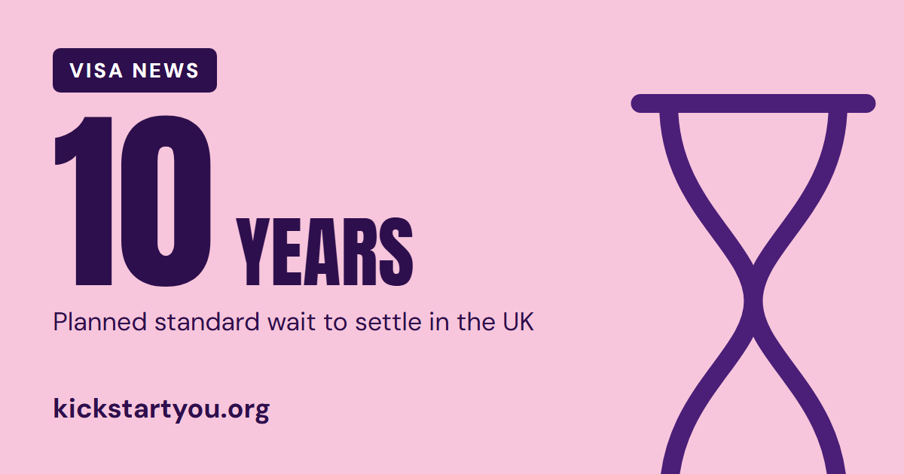

News · 5 November 2026 · From The Weekly Kick
Visa newsSettling in the UK: 10 years becomes the standard wait

If you hope to stay in the UK long term after a sponsored job, this matters to you. On 2 November the government set out its plan for how settlement will work in future, and for most people the wait would be 10 years.
What's changing
Settlement means permission to live in the UK permanently. Until now, most people on work routes could apply after five years. Under the planned "earned settlement" model, how long you wait would depend on your contribution and your character.
- 3 years for the highest earners (at least £125,141 a year)
- 5 years for people earning at least £50,271, and some public service workers such as doctors, nurses and teachers
- 10 years as the new default, for people earning at least £12,571 a year for at least three years
- At least 20 years for people who have broken immigration rules
Who it affects
The government says the new rules would apply to anyone seeking settlement, whenever they arrived in the UK. As now, the rules in force when you apply are the ones that count.
If you're on a Student or Graduate visa, the government's response says time on these visas will not count towards settlement. The same goes for the High Potential Individual visa. Until now, this time could count through the 10-year Long Residence route, which the government plans to close. This is still a plan: the Immigration Rules haven't been changed yet.
Time on a Skilled Worker visa is one of the routes that will count.
What everyone would need
Whatever your earnings, the government says everyone would first need to meet four conditions:
- A clean criminal record
- A high standard of spoken English (about the level of A Level English as a foreign language)
- No debt owed to the government
- A record of steady National Insurance contributions
What hasn't changed
- If you already have settled status, it will never be taken away.
- Family members of British citizens, Hong Kong British Nationals (Overseas) and members of the armed forces keep their current routes.
- The government says no one will be forced to leave.
- The Immigration Rules themselves haven't changed yet.
Where to check
The announcement doesn't give a start date. The government says it will publish more guidance before the changes begin. We'll share the details in The Weekly Kick when they're out. You can read the announcement and the government's full response using the links below.
Where to check
Read the official details: gov.uk: Home Secretary unveils new rules for settlement
Also see: gov.uk: A Fairer Pathway to Settlement (government response)
This isn't immigration advice. For your own situation, check gov.uk or a regulated immigration adviser.